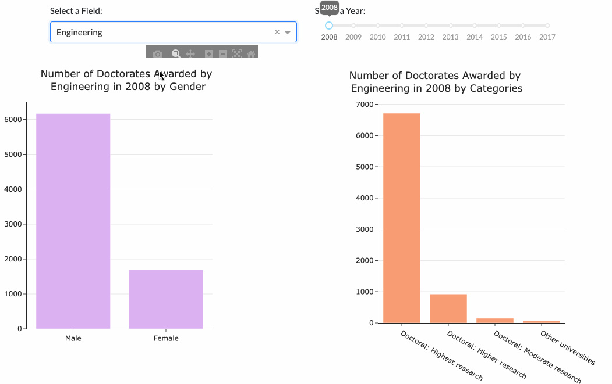
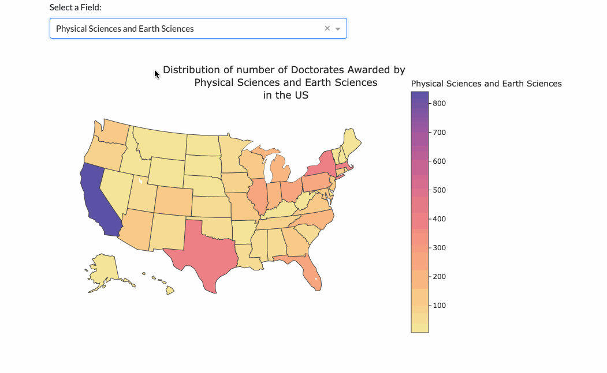

The dashboard for visualizing the numbers of doctorates awarded was created and divided into two parts. Dataset comes from the Science & Engineering Doctorates Database.
The first part is to find out the exact number for a specific field and a specific year. The dropdown option gives all the fields we can choose. Meanwhile, the time slider gives all the years we can choose. By choosing a field and a year, then the bar plot on the left can visualize the distribution of genders and the bar plot on the right can visualize the distribution of education categories. The first part can be used as the below gif shows.
Based on the visualization, there are certain trends for male and female doctorates on choosing their majors. For the field of Life Sciences and Education, there are larger number of female doctorates awarded from the year of 2008 to 2017 compared with male. However, for the field of Engineering, there are larger number of male doctorates from the year of 2008 to 2017 compared with female. Nevertheless, all the doctorates awarded are largely from highest research from the year of 2008 to 2017.
The second part is to find out the distribution of number of doctorates awarded for a specific field in the US. By choosing a field in the dropdown list, the US map below with colors representing the numbers of doctorates awarded can update automatically. It can be used as the below gif shows.
Based on the visualization, there are certain trends for geographic locations on choosing their majors. No matter for which field we choose, California has the highest number of doctorates awarded. Texas has the second highest number except in Psychology and Social Sciences as well as Mathematics and Computer Sciences. For these two fields, New York has higher numbers.
If you find this blog helpful, please feel free to contact me or bookmark this website. Thank you for reading!